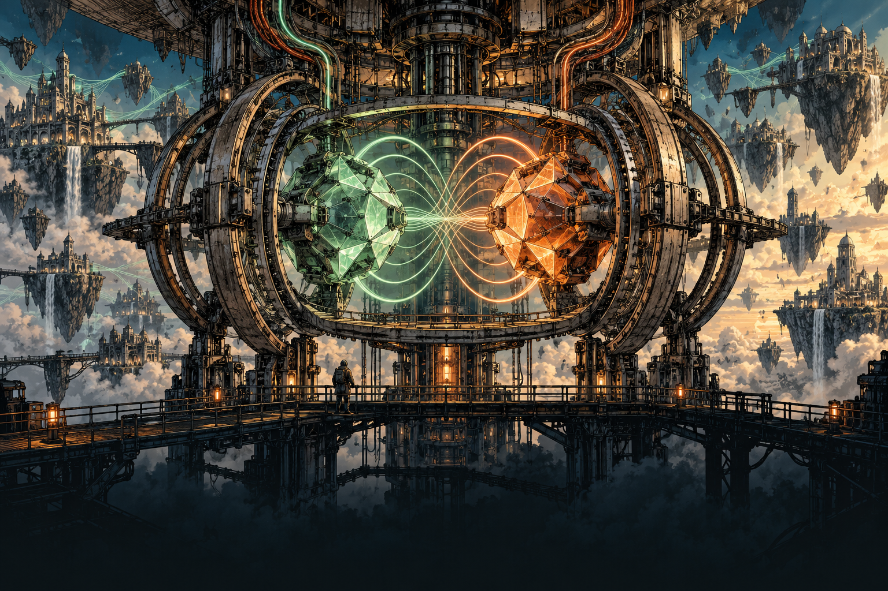
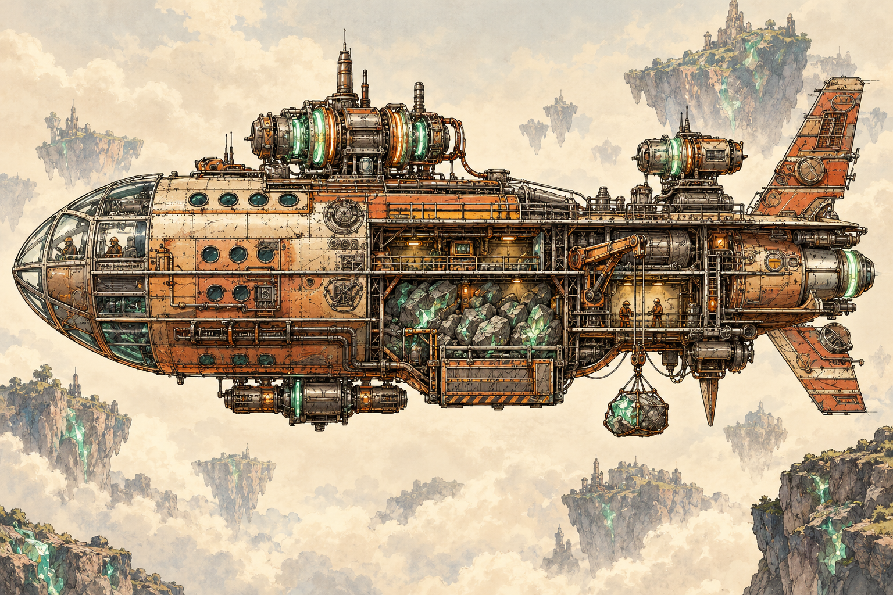

Page 1: The fracture

THE NUCLEAR WAR DID NOT END WITH RUINS.
The Earth itself shattered.
CONTINENTS BECAME ISLANDS IN THE VOID.
Turbulent magnetic waves held the fragments together.
Violent in motion. Predictable in their patterns.

HUMANITY WAS ALMOST WIPED OUT.
Those who survived learned to live
on the pieces of their old world.
Page 2: Adaptation
GENERATIONS PASSED IN THE MAGNETIC FIELDS.
Humanity slowly evolved.
New attributes emerged in a changed world.

NUCLEAR MATERIALS FUSED INTO SOMETHING NEW.
A metal with extraordinary magnetic properties.

THEY CALLED IT MAGNETON.
What began as a discovery
became the foundation of civilization.
Page 3: The cities

OPPOSITE POLARITIES. CONSTANT MOTION.
Paired Magneton cores drove magnetic motors.
The motors powered a new age.
THE ENGINES DID MORE THAN KEEP THE LIGHTS ON.
They stabilized the islands and generated
a field that restored the feel of the old gravity.
CITIES ROSE ABOVE THE BROKEN EARTH.
Magneton kept them afloat.
Every city depended on its supply.
Page 4: The barons

THE FIRST BARONS WERE MINERS.
They extracted Magneton and built ships from it.
Magnetic motors carried them between the islands.
TRADE ROUTES LED TO CITIES. MINING ROUTES LED TO POWER.
Those who controlled the mines and the fleets
became the new ruling class.
THE CITIES GATHERED INTO DUCHIES.
Civilization returned to feudal rule.
Its foundations were no longer land alone, but Magneton.